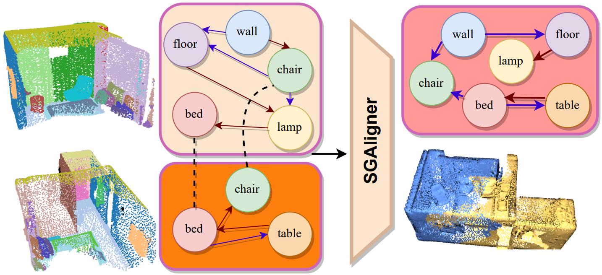
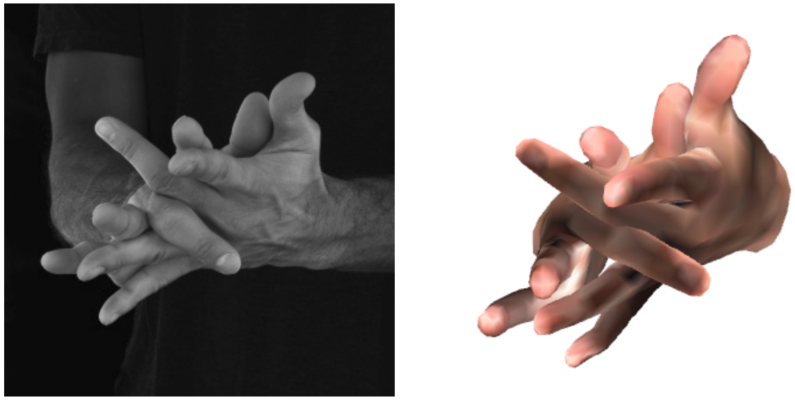
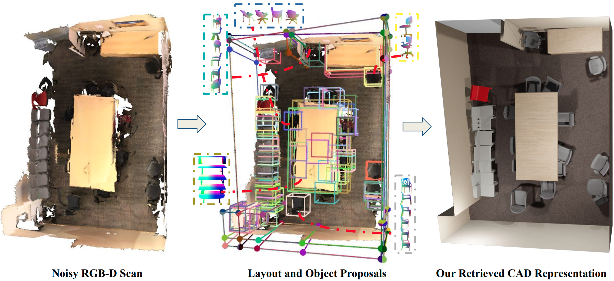
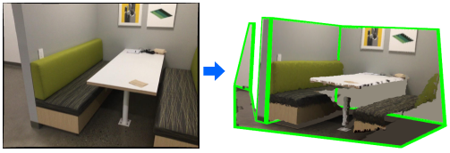

Sayan Deb Sarkar
I'm a 2nd-year PhD student at Stanford University in the Gradient Spaces Group, advised by Prof. Iro Armeni, part of the Stanford Vision Lab (SVL). In summer '25, I interned with the Microsoft Spatial AI Lab, working on efficient video understanding in spatial context.
Before starting PhD, I was a CS master student at ETH Zürich, supervised by Prof. Marc Pollefeys, working on aligning real-world 3D environments from multi-modal data. I graduated with a Bachelors in Information Technology from Manipal University, India, where I spent time working on face recognition and medical imaging problems. In 2020-21, I spent a wonderful time working with Shreyas Hampali and Mahdi Rad at Prof. Vincent Lepetit's lab on hand-object pose estimation and monte carlo scene search for 3D scene understanding. I view them as mentors entering research, and strive to learn from them.
My research interests are on multimodal video understanding and spatial intelligence. I am always looking for research collaborations, get in touch if you have something relevant. If you're around the Bay Area, feel free to reach out for a cup of coffee!
📰 News
- 2026-02 This summer, I will be a research intern at Waymo Perception.
- 2026-01 Invited talk on GuideFlow3D at Voxel51 Best of NeurIPS.
- 2025-09 GuideFlow3D accepted to NeurIPS 2025. See you in San Diego!
- 2025-07 Invited talk(s) on "Scalable Cross-Modal 3D Scene Understanding" at Google XR Research Munich and Imagine Labs.
- 2025-06 This summer, I will be a research intern at Microsoft Spatial AI Lab.
- 2025-03 CrossOver accepted to CVPR 2025 as ✨Highlight✨ (top 3%)!
- 2024-09 Career Update: I joined Stanford University for PhD in Computer Vision.
- 2023-08 This fall, I will be a research engineer intern at Qualcomm XR Labs, Amsterdam.
- 2023-07 SGAligner accepted to ICCV 2023. First first-author submission, first accept!
- 2022-09 I started Computer Science MSc at ETH Zurich.
- ---- show more ----
🔬 Research
My research interests lie at the intersection of Computer Vision and Machine Learning, specifically in the areas of multimodal data representations for spatial understanding.
 |
GuideFlow3D: Optimization-Guided Rectified Flow For Appearance Transfer
A training-free method that steers pre-trained generative rectified flow with differentiable guidance for robust, geometry-aware 3D appearance transfer across shapes and modalities. |
 |
CrossOver: 3D Scene Cross-Modal Alignment
Cross-modal alignment method for 3D scenes that learns a unified, modality-agnostic embedding space, enabling scene-level alignment without semantic annotations. |
 |
SGAligner: 3D Scene Alignment with Scene Graphs
3D Scene Graph Alignment robust to in-the-wild scenarios powering point cloud registration and map integration. |
 |
Keypoint Transformer: Solving Joint Identification in Challenging Hands and Object Interactions for Accurate 3D Pose Estimation
Efficient network for joint two-hand and object pose estimation in complex interactions, paired with the new H2O-3D dataset of two-hand interaction with YCB objects. |
 |
Monte Carlo Scene Search for 3D Scene Understanding
Monte-Carlo Tree Search (MCTS) based analysis-by-synthesis method to recover complete scene (3D layout+objects) from a noisy RGB-D scan. |
 |
General 3D Room Layout from a Single View by Render-and-Compare
3D layout estimation from a single perspective view, to recover complex non-cuboid layouts by solving a constrained discrete optimization problem. |
📁 Projects
 |
SGAligner++: Cross-Modal Language-Aided 3D Scene Graph Alignment
Extension of SGAligner using open-vocabulary cues and learned joint embeddings, achieving robust performance under noise and low overlap. Supervised master student project. |
|
Implemented a ray tracer with functionalities such as advanced camera models, participating media, photon mapping, Disney BRDF, etc on the Nori framework. |
{kind=link}
✨ Misc
- Workshop Organisation: CV4AEC@CVPR 2023, 2024
- Conference Review: CVPR, ICCV, ECCV, NeurIPS, ICRA